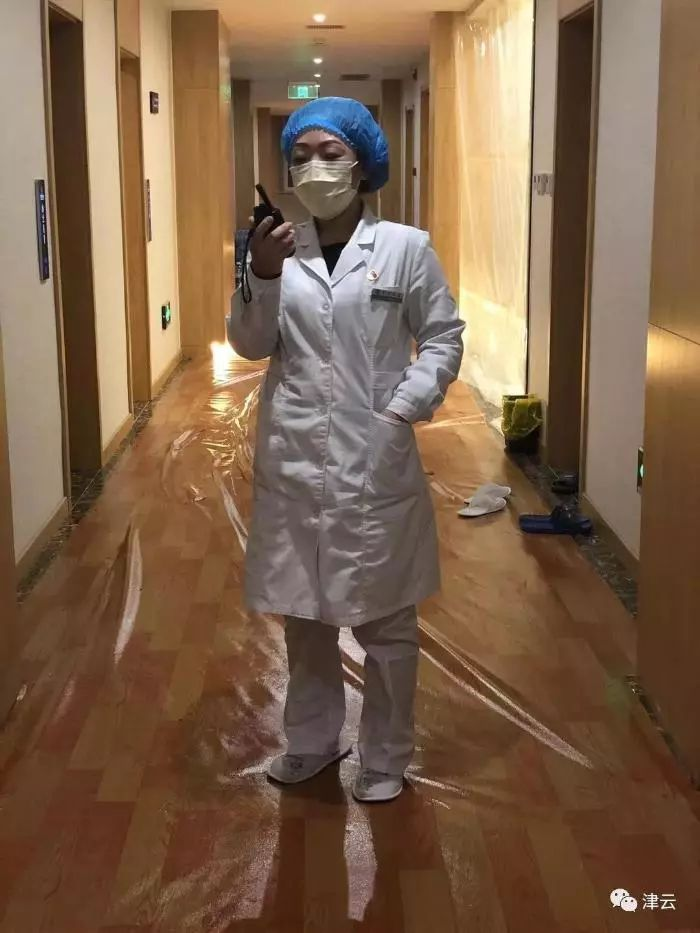
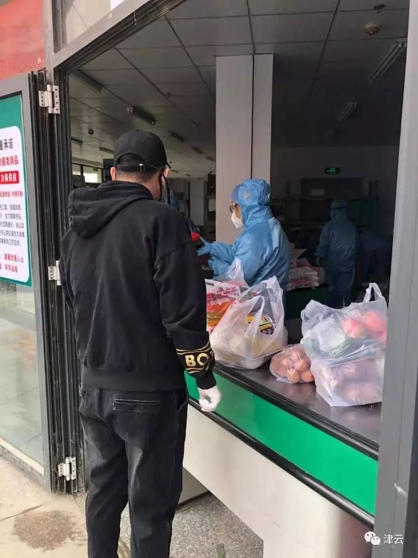
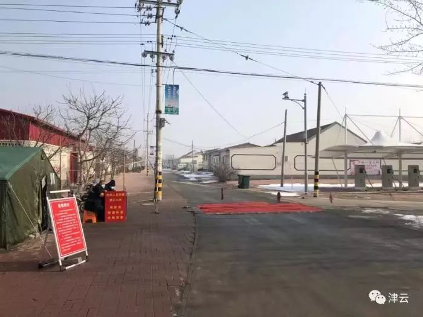

“无人机+特派快递员”，“上海堡垒”由他们铸成
原文链接 备份链接 面对依然紧张的防疫形势，上海的街道、居民区、楼宇不断放出防疫大招，以上海人特有的智慧筑起“上海堡垒”，守卫这座城市。 文 | 陈 冰 2月10日是上海正式意义上的“复工日”，在经历了一个史无前例安静春节之后，人员返程、 …
郭强/津云客户端
一次猝不及防的病毒来袭，一场争分夺秒的防疫战，一个静悄悄的城区。
夜幕降临，离天津市区80多公里的宝坻区主干道上，绚丽的彩灯依次明亮起来，只是灯光扫描之处，没有了以往的喧嚣。除部分超市和药店外，其余各类商铺、饭馆都大门紧闭，马路上偶尔见到路人戴着口罩匆匆而过。
这片位于天津、北京和唐山三个城市几何中心的区域，是京津冀防疫工作重要的一部分。成为重点，意味着责任的重大。所以，在这个表面沉寂安静的地方，一场空前的宝坻战“疫”紧锣密鼓、环环相扣地推进着。
大幕拉开：一个不得不想到的严峻问题
宝坻百货大楼位于繁华商业街，4000平方米营业面积，是宝坻人购物打卡地，尤其节假日，周边村镇的百姓也相约赶来，人流四方而至。

宝坻百货大楼 本文图均为 津云微信公众号 图
谁都不会想到，2020春节前人们喜庆的采购，会引发一场空前的防疫战。
1月24日零时，天津市启动重大突发公共卫生事件一级响应。正月初一，宝坻百货大楼停业。
尽管形势严峻，但直到大年初六，宝坻一直安然无恙。
紧张的气息是在2020年1月31日开始在宝坻区蔓延的。
那天中午11∶00，一位50余岁、戴着口罩的女士走进宝坻人民医院，在分诊台问询后，她被安排到了发热门诊就诊。原以为只是普通感冒发烧的她，经过门诊大夫的检查后，暂时被留在了医院。
11∶30，正在宝坻区疾控中心值班的郝肖阳接到了医院发热门诊电话：“我们这里有一例发烧病人，她没有武汉和湖北的接触史。但经过初步检查，症状很像新冠肺炎。”
这是一个信号。郝肖阳和同事马上驱车前往医院，“并没有觉得紧张，认为这是个例，我们完全可以进行防控。之前我们已经做过多轮培训和学习。”当时，郝肖阳还是比较乐观的。
11∶45，赶到医院的郝肖阳见到了正在病房里的张女士。郝肖阳和同事在病房里一边向张女士了解情况，一边等待进一步检测结果。“当我们了解到，她是百货商场的一名销售人员时，紧张了起来。可以想象到她接触人肯定很多。”郝肖阳回忆，通过和张女士沟通，他们掌握了她发病前14天行动轨迹，以及发病后的出行时间轴，时间精确到了每小时。
16∶40，郝肖阳接到了张女士的初诊结果，确诊为新冠肺炎。随后，张女士的检测标本被送往市疾控中心，等待最后的检测确定。
这时候，郝肖阳不得不想到一个严峻的问题：从第一例病例感染，到百货大楼闭市，其间，到底有多少人彼此擦肩而过？他们身在何处？
防疫就是抢时间。郝肖阳和同事迅速赶到张女士的家里，通过问询和采样，张女士的丈夫也被确诊为感染新冠肺炎，随后被送往海河医院救治。
当晚，宝坻区开始全方位寻找密切接触者和1月19日至1月25日在百货大楼的购物者，把他们妥善安置好，成为当务之急。
一场与病毒的角逐，拉开大幕。
全城动员：“吓我一跳，不让出门了”
这是一场全城大动员。
“还在睡觉，大喇叭忽然一下响起来了，吓我一跳。告诉我们疫情严重，不让出门了。”宝坻辛务屯村村民王建说。
不止王建一个人为此感到惊讶。2月1日一大早，全区各街镇、村居和社区的大喇叭、小喇叭都轰然响起，且每天不限次巡回播报。同时，全区成立了由公安、街镇、社区、卫生院组成的4人小组，深入各社区、村摸排走访。电视、广播、宣传车、融媒体“紧急寻人”。
此时，在百货大楼超市工作、20岁的王丽（化名），正在家里玩着手机，一条宝坻区确诊人员的消息，进入她的视线。“心里咯噔了一下，我和被确诊人员不在一个区域内工作，但是，谁知道呢？离得也没那么远。”王丽说，疫情刚开始，她也看到了区里和居委会的通知，让大家少出门，戴口罩。她没有出现任何的不适，所以就一直在家里待着。
很快，王丽接到了街道工作人员和区卫健委的电话。“电话里通知我，需要对我进行隔离观察，希望我配合。”这让王丽有些崩溃，不知道将要面对什么，也不知道会跟什么样的人隔离在一起。
2月3日，王丽拿了一些换洗衣服，家人开车送她到位于宝坻开发区的钰曦医学观察所。“感觉很魔幻，穿着全套防护服的工作人员对我进行消毒，让我想起电影《生化危机》里的场景。”
随后，王丽被带进了6层一间有将近30平方米的房间，采光和视野还不错，可以看到远处的写字楼。房间有一股浓郁的酒精味道，桌子上放着口罩、体温计以及一张印着注意事项和医生联系方式的A4纸。
王丽在留观所
让王丽印象最深刻的是2月3日晚上，她到这里吃的第一顿饭。“三菜一汤，还有水果，非常好吃，比家里做的好。”但孤单的感觉让王丽的前几天并不那么好过，“太静了，被隔离的人互相不会见面，就像一座座孤岛。最难的时候，就给医护人员打电话，她们会陪我聊天。”
随着时间的推移，王丽的这种疏离感在慢慢减少，走廊会传来有人打电话的声音，还有小孩子的哭闹声。通过声音感知彼此，虽然看不见，“但是你知道他们都陪着你。”
王丽告诉记者，未知的才最可怕，刚开始很不理解为什么要单独隔离，感觉自己像是被关起来了，或担心已经受到了感染，恐惧让她不愿意配合医护人员的工作。“现在想想，这段时间除了无聊一点，更像给自己放了一个长假，通过手机看新闻、看视频、玩游戏、跟家人聊聊微信，日子过得也不慢。过几天我就结束观察期，可以回家了。我就希望这场‘战疫’能早点结束，医护人员也能正常回家。”
报声平安：打赢之时才是团聚之日
海滨医院副院长郭一是钰曦医学观察所的负责人，她陪王丽聊过两次天。她能够感同身受被隔离人员的心理困境，因为她也已经有10多天没有回家了。

留观所的医护人员郭一
1月29日，她接到设立集中医学观察点的通知。很快，钰曦酒店被征用，在酒店现有布局的基础上，划分出了清洁区和污染区。酒店四到六楼的客房，被规划为污染区域。从大堂西侧门进入，沿楼梯间通往二楼的医护人员工作区，这是清洁通道。
1月31日晚上，隔离点刚刚改造完成，陆陆续续就迎来了79位住客，他们中有老人，也有独自照顾孩子的母亲……依照相关规定，从入住起，他们需要被隔离14天并接受医学观察。
“您好，今天早上醒来体温多少？36.4℃，好的，注意开窗，口罩戴着，尽量多喝水……”电话机前，隔离点的医护人员郭一开始对着住客信息表，挨个给各房间打电话询问体温。由于污染区与清洁区完全隔离，彼此之间的日常沟通全凭一根电话线。
“电话里虽然只有只言片语，但从住客的语调、语言和周围的环境声能听出他们的情绪和状态，如果住客比较焦虑，我会和他多聊一点。”
一位住客量出的体温比平时略高一点，在电话里能听出对方非常害怕。“你别紧张，多休息，有时候体温是受情绪影响的……”临近11点钟，挂上最后一通电话，郭一才喝上今天的第一口水。
在这里，隔离人员被称为住客，而非病人。“他们是确诊人员的密切接触者，需要重点观察。”进入隔离点，住客本身承受着巨大的心理压力，医护人员的大量工作是消除住客的焦虑。“要让他们觉得，‘我只是为了家人和其他人的安全来这里观察一下’。”
自从进驻观察点，郭一已经没有回家的概念了，10名医护人员24小时轮班，每天工作十几个小时，与外界联系就靠一部手机，向家人只能深夜报声平安。“打赢这场战役之时，才是和家人团聚之日。”
而像钰曦这样的留观所，宝坻区共准备了9个，目前启用了3个。截至2月12日早晨8点，宝坻区留观人员共366人。
万人筛查：隔离病毒不隔心
疫情在发酵。
截至2月11日，筛查百货大楼相关人员总数已达14000人以上。
截至2月12日，宝坻区确诊人数达到41人，绝大多数都与百货大楼相关。
不断上升的数字，强化着这样一个信息：这不是儿戏，这是切切实实的危险。
为了进一步阻断疫情传播，宝坻区决定再一次主动出击，“撒大网捞小鱼”，将隐患清仓见底，确保患者能够及时得到救治。
宝坻战“疫”进入白热化。涉及宝坻全区的万人大筛查开始了。这其中包括在钰曦留观所隔离的王丽所在的朝霞街道。
2月11日晚上，为了让居民和村民能够提前了解筛查安排，减少人为阻力，提高执行效率。宝坻区通过短信、微信公众号等形式，向全区居民发放了《关于广大群众配合入户调查的倡议书》。
2月12日一大早，宝坻的24个街镇1个开发区的所有基层工作人员开始行动起来。
“我是街道工作人员，请开下门。”“你什么时候去过百货大楼？最近有没有发烧、咳嗽、嗓子疼？密切接触者都有谁？身体怎么样？有什么不舒服的地方吗？”宝坻朝霞街道党工委委员、武装部长白永清在这次万人筛查中，和其他基层工作者共筛查了朝霞街道2000多人，无一发热人员。
平时，白永清负责朝霞街道下属9个村的筛查和防疫工作，对百货大楼相关人员密切关注，一天两次记录他们的体温，要求居家隔离。每天走好几万步，接100多个电话，处理各种群众反映的信息，安抚大家的紧张情绪，挨家挨户打电话确认情况，对多个重点院落进行走访……白永清忙得脚不沾地。有些小区和村子的居民租户多，很多都在外地没回来。“我们只有反复上门，张贴温馨告知，经常去敲门，多做尝试。”几天下来，白永清手都敲红了，甚至有些破皮。
“大部分居民都很自觉，个别有抵触。”白永清说，村子和小区的居民老人比较多，刚开始不是很理解，但是经过多轮的劝导，都知道了防疫的严重性，从原来的不配合到现在有情况主动汇报。
“现在这个时期，每个人都需要配合，只有这样才能战胜疫情。”白永清说，疫情防控无小事，基层工作就是要让群众感受到党和政府的温暖一直都在。隔离病毒不隔爱、不隔心，只要我们众志成城，一定能打赢这次疫情阻击战。
封闭管理：进小区的，和进不了小区的
雷霆出击，昼夜作战。24个街镇一个开发区的筛查工作在24小时内如期完成，筛查百货大楼相关人员总数达19718人。
雷厉风行的背后，与宝坻区基层工作人员平时的奋战一线分不开。
2月7日宝坻区区长毛劲松在新闻发布会上说：“只要一个小区或一个村子，发现两例以上确诊病例，将进行封闭管理。”
疫情防控在升级。
宝平街河景馨园社区是最早实行全封闭管理的小区之一。社区工作人员、志愿者和公安干警组成的小组负责管理整个小区的防疫安全。在小区入口处，张贴着封闭管理的公告：“因新型冠状病毒形势非常严峻，涉及地域不断增加，为了确保小区所有居民健康、安全，小区实施封闭管理。非本小区人员、车辆，一律不得入内。”

河景馨园小区门口
“整个小区有964户居民，2000多人。其中两栋楼里的居民实行完全隔离，其他居民除非特殊情况，不允许离开小区。”河景馨园居委会主任孙冰告诉记者，疾控部门对隔离区周边的环境，包括公共区域、过道、大门、门把手、电梯、地下室，都按照国家标准进行了彻底消毒。
现在河景馨园小区严格执行“全民不出门”行动，每户家庭（居家隔离家庭除外）每两天可指派一名家庭成员出门采购生活物资，其余人员除生病就医、疫情防控工作需要，以及在保障公共事业运行、群众生活及其他涉及重要国计民生的重要岗位上班外，一律不得外出。
“目前社区已给被隔离的居民建立了档案，并且专门建立了一个群，需要什么只要及时跟我们沟通，我们会有专门的工作人员出去采买，对于居家隔离的家庭，会给他们送上门。”孙冰说。
社区隔离，居民生活保障是关键。孙冰介绍，在小区开始实施隔离后，上级部门协调了劝宝超市进驻小区，作为物资供应点，不论是米面油，还是菜肉副食奶制品，一应俱全。“居民可以不用外出，在小区内就可以买到基本的生活物资。在超市里基本生活物资保证充足，并且每天物资都会进行补充，不会让小区居民因为小区封闭而生活不便。”

河景馨园小区居民在进驻超市买菜
“宝坻区现在设有4个物资储备库，对米、面、油、蛋、绿叶菜等21种生活必需品进行了充足储备。”宝坻区商务委办公室副主任科员马宏颖告诉记者，宝坻区货源充足，物价平稳，确保关键时刻群众买得到、用得上。
宝坻区发改委副处级调研员曹庆玲介绍，宝坻是农业大区，拥有大型蔬菜基地20余个，大型养殖场数量也很多，自身供应很充足。目前全区储备米面347吨、肉类2.5吨、鸡蛋10吨、蔬菜210吨、水果21吨、原粮31000吨、小麦7000吨，够全区80万人口2个月的供应。
严防死守：“每一户都走访和打过电话”
宝坻是一个涉农区，农业人口较多，现在宝坻区的任务从“内防扩散、外防输入”到对内防止疫情扩散，对外，防止疫情输入的同时，更要防止疫情输出。其中，防止疫情由城区向农村扩散是重中之重。宝坻区正在对351个社区和村进行严防死守！
宝坻区辛务屯村，像诸多村庄一样，随着疫情扩散和政府的宣传，村民逐渐意识到此次疫情的严重性。为了减少不必要的人员流动，减少病毒传播的可能，村子开始设卡封村，不允许随意进出。路口拉上隔离线，设置了登记桌位，要求村民进出时登记信息，并测量体温。

封闭的辛务屯村
“每一户人家我们都走访和打过电话，去过省外的进行登记，自我观察；如果是近期从湖北省回来的，那就强制要求居家隔离。”辛务屯村党支部书记唐连江说，现在基本全村人都不出门，如果一些必要岗位有工作需求的，必须拿着单位的证明信才能进出。
“我们每天给隔离人员打电话，要求两次报体温。不允许出门，有需求提出来，村里成立了服务队，满足隔离群众各种生活需求。”唐连江说，全体村民平常采买物品，可以先打电话给村子里的供应超市，超市给准备好以后，村民付款后直接拿走，减少接触和聚集。
唐连江告诉记者，农村地区医疗条件相对薄弱，村党组织充分发挥战斗堡垒作用，严格加强管理检测，减少人员流动，切实做到早发现、早报告、早隔离、早治疗，严防病毒蔓延。充分利用农村大喇叭，向村民们讲清楚，严格管理就是对乡亲们生命健康的高度负责。
有人动起来，是在跟时间赛跑，争夺健康主动权，有人宅在家，是在用一部分自由让渡严峻形势下的疫情防控。
摸排、隔离、留观、诊断 ……登记在册、现状追踪、封闭管理、设卡封路……储备物资、充足供应、个体服务……方方面面，都在践行着“采取有力措施，加大联防联控、群防群控力度，严之更严、细之更细，坚决打赢疫情防控阻击战”的信心和决心。
戳这里进入
“全国新型冠状病毒感染病例实时地图”↓↓↓

本期编辑 周玉华
推荐阅读


原文链接 备份链接 面对依然紧张的防疫形势，上海的街道、居民区、楼宇不断放出防疫大招，以上海人特有的智慧筑起“上海堡垒”，守卫这座城市。 文 | 陈 冰 2月10日是上海正式意义上的“复工日”，在经历了一个史无前例安静春节之后，人员返程、 …
原文链接 备份链接 凤凰新闻客户端 凤凰网在人间工作室出品 从多伦多到武汉，从武汉到汝州，从随州到海口，从福清到泉州……本期的4个故事，与4段离家或回家的旅程相关。疫情当前，或长或短的归途变得曲折复杂。有人花了几十个小时从加拿大回到武汉， …
原文链接 备份链接 *************▲************* 四川省巴中市巴州区，一辆鄂A车牌（武汉）轿车的车窗上，贴着红岩社区加盖公章的证明，称车主无感冒发烧现象，且正在家自行隔离。 （杜茂林/图） 全文共*4201*字， …
原文链接 备份链接 在武汉经商、务工、求学的温州人大约有18万。春节前后，至少5万温州人从武汉等地返回温州。他们中很多人一到家乡就进行了14天的隔离观察。 有的是居家隔离，当地政府工作人员每天定时“查岗”，确认隔离者是否在家。 这些 …
原文链接 备份链接 “ - 疫 情 之 下 - 其实我内心很挣扎，有钱不挣这是傻子行径。但我明白这是非常时期，作为普通人，我们既然帮不上忙，那就选择不添乱吧！ ” 1 1月24日是大年三十，终于靠到了年根儿，孩子们的作业也已经完成了大半， …